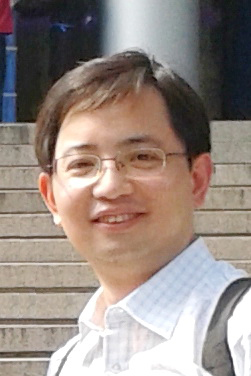

Keynote Speakers
Alexandr Andoni
Columbia University, USA
Title: Data-Dependent Hashing for Similarity Search
Abstract: The quest for efficient similarity search algorithms has lead to a number of ideas that proved successful in both theory and practice. Yet, the last decade or so has seen a growing gap between the theoretical and practical approaches. On the one hand, most successful theoretical methods rely on data-indepependent hashing, such as the classic Locality Sensitive Hashing scheme. These methods have provable guarantees on correctness and performance. On the other hand, in practice, methods that adapt to the given datasets, such as the PCA-tree, often outperform the former, but provide no guarantees on performance or correctness.
This talk will survey the recent efforts to bridge this gap between theoretical and practical methods for similarity search. We will see that data-dependent methods are provably better than data-independent methods, giving, for instance, the first improvements over the Locality Sensitive Hashing schemes for the Hamming and Euclidean spaces.
Bio: Alexandr Andoni's research focuses on advancing algorithmic foundations of massive data, with interests revolving around sublinear algorithms, high-dimensional geometry, and theoretical machine learning. Alexandr is an associate professor at the Columbia University and a member of the Columbia's Data Science Institute. He graduated from MIT in 2009, with a PhD thesis on Nearest Neighbor Search, under the supervision of Piotr Indyk. Following graduation, he was a postdoc at the Center for Computational Intractability at Princeton, as well as a visitor at NYU and IAS. Alexandr then joined Microsoft Research Silicon Valley, where he was a researcher until 2014. Afterwards, Alexandr was a visiting scientist at the Simons Institute for the Theory of Computing at UC Berkeley.
Takashi Washio
Osaka University, Japan
Title: Defying the Gravity of Learning Curves: Are More Samples Better for Nearest Neighbor Anomaly Detectors?
Abstract: Machine learning algorithms are conventionally considered to provide higher accuracy when more data are used for their training. We call this behavior of their learning curves "the gravity", and it is believed that no learning algorithms are "gravity-defiant". A few scholars recently suggested that some unsupervised anomaly detector ensembles follow the gravity defiant learning curves. One explained this behavior in terms of the sensitivity of the expected k-nearest neighbor distances to the data density. Another discussed the former's incorrect reasoning, and demonstrated the possibilities of both gravity-compliance and gravity-defiant behaviors by applying the statistical bias-variance analysis. However, the bias-variance analysis for density estimation error is not an appropriate tool for anomaly detection error. In this talk, we argue that the analysis must be based on the anomaly detection error, and clarify the mechanism of the gravity-defiant learning curves of the nearest neighbor anomaly detectors by applying analysis based on computational geometry to the anomaly detection error. This talk is based on collaborative work with Kai Ming Ting, Jonathan R. Wells, and Sunil Aryal from Federation University, Australia.
Bio: Takashi Washio is a full professor in Division of Information and Quantum Sciences at the Institute of Scientific and Industrial Research of Osaka University since 2006. He has been an associate professor in the same institute from 1996 to 2006. Before joining the university, he had been a visiting researcher of nuclear reactor laboratory of Massachusetts Institute of Technology (MIT) from 1988 to 1990 and a researcher in Mitsubishi Research Institute from 1990 to 1996. His current main interest is the study on machine learning principles for high dimensional big data and their applications to real world problems. He has contributed many Japanese national projects on data mining and its applications. He has been chairs and program committee members in many international data mining and machine learning conferences including SIG-KDD, IEEE ICDM, SDM, ICML, NIPS, ECML/PKDD and PAKDD.
Zhi-Hua Zhou
Nanjing University, China

Title: Partial Similarity Match with Multi-Instance Multi-Label Learning
Abstract: In traditional supervised learning settings, a data object is usually represented by a single feature vector, called an instance. Such a formulation has achieved great success; however, its utility is limited when handling data objects with complex semantics where one object simultaneously belongs to multiple semantic categories. For example, an image showing a lion besides an elephant can be recognized simultaneously as an image of a lion, an elephant, "wild" or even "Africa"; the text document "Around the World in Eighty Days" can be classified simultaneously into multiple categories such as scientific novel, Jules Verne's writings or even books on traveling, etc. In many real tasks it is crucial to tackle such data objects, particularly when the labels are relevant to partial similarity match of input patterns. In this talk we will introduce the MIML (Multi-Instance Multi-Label learning) framework which has been shown to be useful for these scenarios.
Bio: Zhi-Hua Zhou is a Professor and Founding Director of the LAMDA Group at Nanjing University. He authored the book "Ensemble Methods: Foundations and Algorithms", and published more than 100 papers in top-tier journals and conference proceedings. His work have received more than 18,000 citations, with a h-index of 71. He also holds 14 patents and has good experiences in industrial applications. He has received various awards, including the National Natural Science Award of China, the IEEE CIS Outstanding Early Career Award, the Microsoft Professorship Award, etc. He serves as the Executive Editor-in-Chief of Frontiers of Computer Science, Associate Editor-in-Chief of Science China, and Associate Editor of ACM TIST, IEEE TNNLS, etc. He founded ACML (Asian Conference on Machine Learning) and served as General Chair/Co-Chair of ADMA'12, PCM'13, PAKDD'14, ICDM'16, Program Committee Chair/Co-Chair of PRICAI'08, SDM'13, ICDM'15 and IJCAI'15 Machine Learning Track, and Area Chair of NIPS, ICML, AAAI, IJCAI, KDD, ICDM, etc. He also serves as Advisory Committee member for IJCAI 2015-2016, and Steering Committee Member of PAKDD and PRICAI. He is a Fellow of the AAAI, IAPR, IEEE, IET/IEE, CCF, and an ACM Distinguished Scientist.